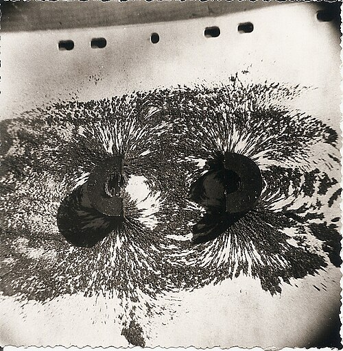
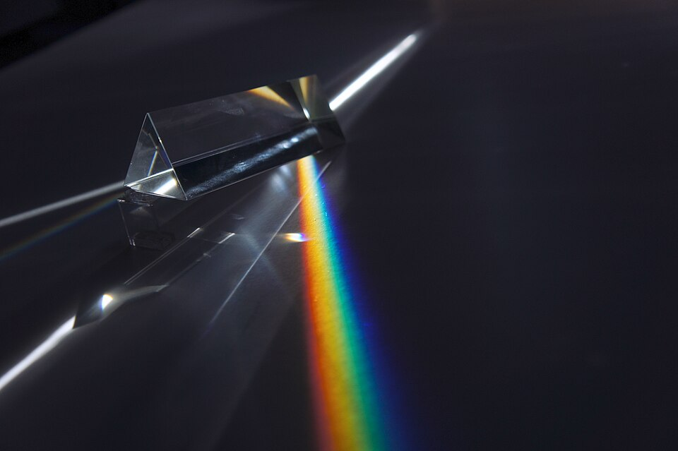
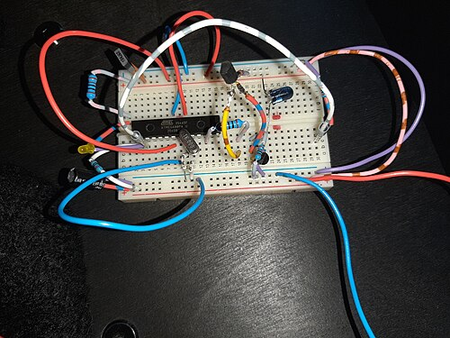

Iron filings
Scatter filings over a card above two magnets and tap it. The lines they make are the field you cannot see.
This month the gallery shows three experiments, one at a time. Scroll, use the arrow keys or the buttons; each one opens out of the last.

Scatter filings over a card above two magnets and tap it. The lines they make are the field you cannot see.

White light goes in, a band of colours comes out. Each colour bends by a different amount in the glass.

Push the parts in, no solder. When the last wire goes in the light comes on, and you can take it all apart again.
A test page for the stepped showcase card. The steps are places on the page: the scroll position alone says which exhibit shows and how far the wipe has gone, so the wheel, a trackpad, a finger, the keys, the scrollbar, a link and a reload all land on the same frame. Below the stage the page scrolls as any page does.